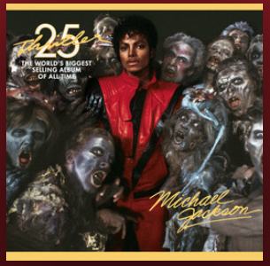
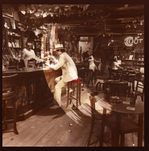
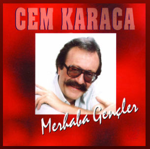

Paul McCartney’nin klasik Beatles şarkısı “Let It Be” annesiyle ilgili gördüğü bir rüyadan ilham aldı.
McCartney, o sırada alkol ve uyuşturucuyla mücadele ediyordu. Bu kişisel mücadele o kadar derinleşmişti
ki; uzun bir geceden sonra eve geldi ve uyuyakaldı. Uyandığında, 14 yaşında ölen annesini gördüğünü fark
etti.
McCartney bu konu hakkında şunları söylemiş; “Annemi gördüm. Yüzü, özellikle gözleri tamamen berraktı.
Bana çok nazikçe ve güven verici bir şekilde; ‘Bırak artık’ dedi. Çok güzeldi. Harika bir duyguyla uyandım.
Gerçekten hayatımın bu zor noktasında beni ziyaret etmiş gibiydi ve bana şu mesajiı vermişti; “Savaşma,
yalnızca dene her şey yoluna girecek”
Michael Jackson / “Billie Jean”

“Billie Jean”, Michael Jackson’ın en sevilen şarkılarından biri. Yıllar boyunca listeleri alt üst eden, bugün
bile milyonlar tarafından dinlenen Billie Jean şarkısının arkasındaki hikaye ise korkunç. Efsaneye göre
Jackson, çocuğunun babası olduğunu iddia eden bir kadından mektuplar alıyordu. Mektup yazarı, sürekli
olarak Jackson’a olan sevgisini dile getirirken, onu onunla bir hayata başlamaya da ikna etmeye
çalışıyordu. Jackson mektuplardan o kadar rahatsız olmuştu ki, onlar hakkında sık sık kabus görüyordu.
Bir gün Jackson; aynı kadından bir mektup, fotoğraf ve silah içeren bir kutu aldı. Kadın, Jackson’dan
kendisini öldürmesini istedi. Mektuba göre o da kendisini ve bebeğini öldürecekti ve böylelikle başka bir
hayatta birlikte olabileceklerdi. Bu korkunç olay, Jackson’a yaşadıklarını aşmak ve dolaylı olarak kadına
hitap eden bir şarkı yazmak için ilham verdi.
Led Zeppelin / “All My Love”

Efsanevi grup Led Zeppelin’in “All My Love” şarkısı, bir aşk şarkısı gibi görünüyor. Ancak
aslında ardında yıkıcı bir hikayeyi gizliyor. Şarkı grubun efsane vokalisti Robert Plant’in
henüz 5 yaşındayken mide virüsü nedeniyle ölen oğlu Karac Pendragon için yazıldı.
Şarkıda; doğum, yaşam, ölüm ve yeniden doğuma vuru yapılıyor. Şarkı ayrıca introsuyla
büyülüyor.
Plant, daha sonra bir röportajda şarkıyla ilgili olarak “Bence Karac aile olarak bize neşe
veriyordu ve bununla gurur duyuyordu. Çılgın bir şekilde hala ara sıra bunu yaptığını
düşünüyorum.”
Haluk Levent – Elfida
Belki de bu listede hikayesi en çok bilinen şarkı bu şarkı olacak. Fakat yaşanmış
hikayeleri olan şarkılardan oluşan bir liste yapıp Elfida’yı dışarıda bırakmak
olamazdı, kabul edilemezdi.
Haluk Levent, gerçek ismi Beyzanur olan kızla 4 yaşında tanışmıştı. Kızın babası
bir emekçiydi. Beyzanur tedavi için Cerrahpaşa Tıp Fakültesine gidiyordu. Haluk
Levent ise aileye ve kıza yardımcı olmaya çalışıyor ve sık sık ziyaretine gidiyordu.
Doktorlarla görüşüyor ve durumunu öğreniyordu.
Doktorlardan biri bir gün Haluk Levent’e “Haluk Bey bu kızı gözden çıkartın” dedi
ve şarkı belki de o an orada yazıldı. En azından ismi orada konuldu. Haluk
Levent’in yakın arkadaşı Emrah da yanındaydı.
Elfida dedi arkadaşı, Osmanlıcada “gözden çıkarılan kadın” demekti ve şarkının
düzenlemeleri yapıldı. Haluk Levent Beyzanur’a son günlerinde bu şarkıyı hep
söyledi fakat küçük kız bu şarkının kendisi için yazıldığını bilmiyordu.
Cem Karaca – Ceviz Ağacı

Bu şarkının sözleri Nazım Hikmet’e ait bir şiirden. Büyük sanatçımız Cem Karaca
ise bu şarkıyı eğlenceli bir şekilde bestelemiş ve seslendirmiş. Tabii iki büyük
isim bir araya gelince ortaya harika bir şarkı çıkmış şimdi gelelim hikayesine.
Nazım Hikmet’in kaçak olduğu ve arandığı dönemlerde sevdiği kadın ile
buluşması gerekiyor ve güvendiği arkadaşlarından birine söyleyip sevdiği
kadına haber vermesini, Gülhane Parkında onu bekleyeceğini söylüyor.
Arkadaşı ise Nazım’a ihanet edip polise haber veriyor. Nazım parkta beklerken
polisi görüyor ve Gülhane Parkındaki ceviz ağaçlarından birinin tepesine çıkıyor.
Polis parkta Nazımı ararken o sırada sevdiği kadında parka geliyor. Ve Nazım o
sırada kafasından şu sözleri yazıyor:
Ben bir ceviz ağacıyım Gülhane Parkında
Ne sen bunun farkındasın, ne de polis farkında